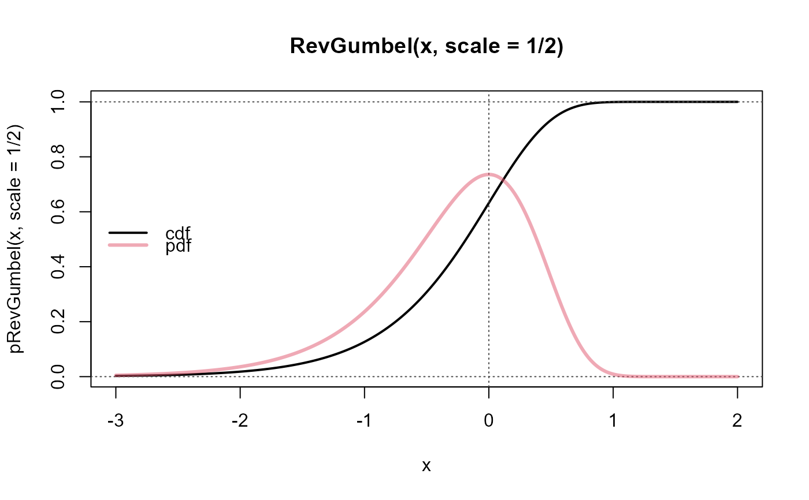

Density, distribution function, quantile function and random generation for
the “Reverse” Gumbel distribution with parameters location and
scale.
dRevGumbel(x, location = 0, scale = 1)
pRevGumbel(q, location = 0, scale = 1)
qRevGumbel(p, location = 0, scale = 1)
rRevGumbel(n, location = 0, scale = 1)
qRevGumbelExp(p)numeric vector of abscissa (or quantile) values at which to evaluate the density or distribution function.
location of the distribution.
scale (\(> 0\)) of the distribution.
numeric vector of probabilities at which to evaluate the quantile function.
number of random variates, i.e., length of resulting
vector of rRevGumbel().
A numeric vector, of the same length as x, q, or
p for the first three functions, and of length n for
rRevGumbel().
Based on code by Werner Stahel, partly inspired by the VGAM package (numeric refinements by Martin Maechler), adapted to conform to package standards.
distributions-overview; the Weibull distribution
functions in R's stats package.
curve(pRevGumbel(x, scale= 1/2), -3,2, n=1001, col=1, lwd=2,
main = "RevGumbel(x, scale = 1/2)")
abline(h=0:1, v = 0, lty=3, col = "gray30")
curve(dRevGumbel(x, scale= 1/2), n=1001, add=TRUE,
col = (col.d <- adjustcolor(2, 0.5)), lwd=3)
legend("left", c("cdf","pdf"), col=c("black", col.d), lwd=2:3, bty="n")

med <- qRevGumbel(0.5, scale=1/2)
cat("The median is:", format(med),"\n")
#> The median is: -0.1832565